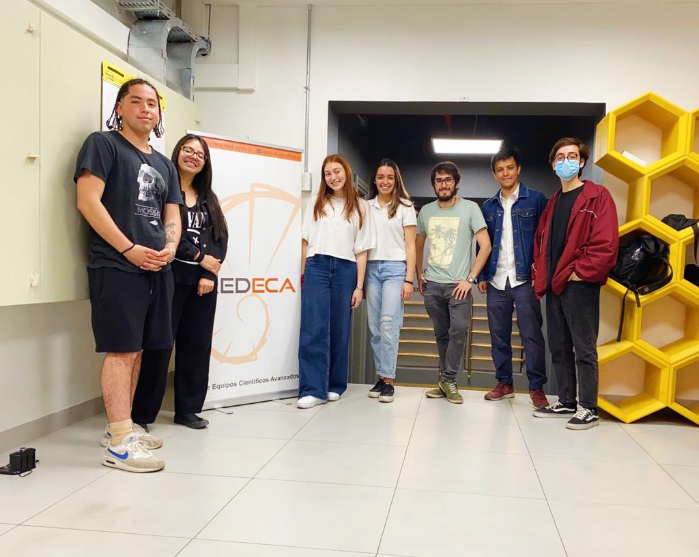
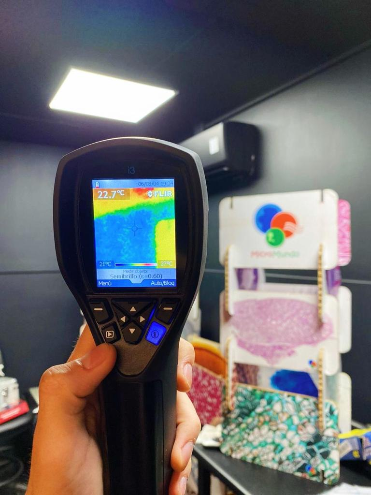
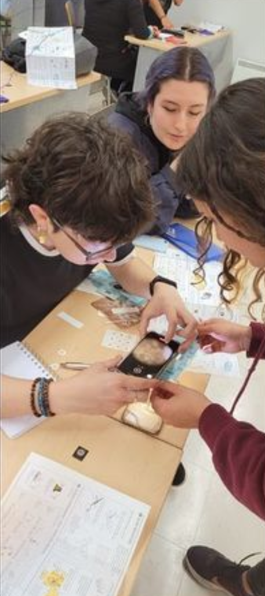
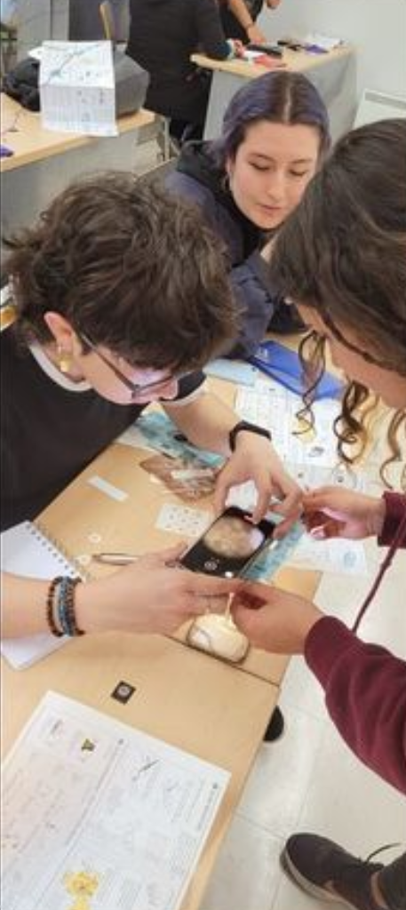
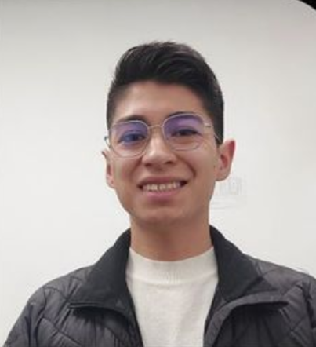
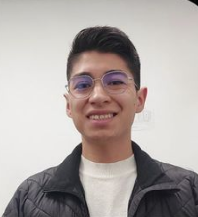

Somos la Asociación Estudiantil de Neurociencia y Neurotecnología, una organización sin fines de lucro que tiene como finalidad difundir conocimiento sobre el campo de neurociencia en Chile, teniendo en cuenta que no existe la carrera de Neurociencia en Chile como tal. Sin embargo, se espera que llegue el día en que la neurociencia tome más relevancia en la educación.
AENN nace en el año 2020 como un pequeño proyecto de un grupo de amigos estudiantes que comparten un interés por la neurociencia. Buscaban visibilizar el poco énfasis que existe en esta área dentro de las instituciones de educación superior en Chile y realizar divulgación científica hacia la comunidad.
La Asociación Estudiantil de Neurociencia y Neurotecnología (AENN) tiene 5 principios que deben respetarse transversalmente en todas sus actividades:
Construir una comunidad que genere espacios interdisciplinarios en torno a la neurociencia y neurotecnología para facilitar el acceso a estas disciplinas.
Ser una comunidad nacional de neurociencia y neurotecnología que interconecte a todas las personas del país interesadas en estas disciplinas.
Acercar el conocimiento de la neurociencia y neurotecnología a estudiantes de diversas carreras, mediante la realización de actividades académicas y de difusión científica, con el fin de democratizar el conocimiento y la cultura neurocientífica.
CENN fue el primer Congreso Estudiantil de Neurociencia y Neurotecnología, realizado en el año 2022.
El taller de microscopía neuronal fue una iniciativa realizada en la Pontificia Universidad Católica de Chile por AENN, para acercar la neurociencia a los estudiantes.
  

 
